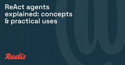

Redis Blog
https://redis.io/en/blog
The latest on what's happening at Redis, from company news, and product announcements to tips, tricks, and how-to information for database developers.
フィード

ReAct agents explained: concepts & practical uses
Redis Blog
If you've watched an AI coding assistant hunt down a bug, run a test, read the failure, and adapt its next fix, you've watched Reasoning and Acting (ReAct)-like behavior at work. ReAct is a common pattern in production agent systems today. It's simple...
5日前
Choosing & integrating LLM APIs: a practical guide
Redis Blog
Making your first LLM API call is easy: with most provider SDKs, it's about five lines of code. Keeping that call fast, affordable, and reliable once real users show up is where the actual engineering happens: costs can compound as conversations grow,...
6日前
Metadata filtering: boost search precision as data grows
Redis Blog
Vector search is great at finding things that are semantically similar, but similarity isn't the same as correctness. A pure vector query doesn't know that a product is out of stock, that a document belongs to a different customer, or that a policy wa...
6日前

Vector search in production: index trade-offs, failure modes & what to watch
Redis Blog
Vector search runs on a simple idea: turn data into coordinates, and treat similarity as distance. An embedding model maps each sentence, image, or document to a point in a few hundred dimensions of space, where items with related meaning land near ea...
9日前
Vector search database: news & 2026 guide
Redis Blog
If you've built anything on top of an LLM in the past couple of years, you may have hit the wall many builders hit: the model writes fluently but has no view into your data. A vector search database helps close that gap. It stores vector embeddings an...
10日前
Fresh context: change data capture, not batch ETL
Redis Blog
In many systems, the reason an agent quotes yesterday's data isn't the model. It's the pipeline behind it: a nightly ETL job that refreshed the agent's context hours ago. Change data capture (CDC) can shrink that staleness window from hours to seconds...
11日前
Agent memory as a moat: how context compounds
Redis Blog
Base LLM inference is stateless. The model doesn't remember your last conversation, your users' preferences, or the mistake your agent made ten minutes ago. Unless the app supplies persisted context, everything gets discarded after each request. That ...
11日前
Vector embeddings & language: how models turn words into geometry
Redis Blog
A user types "refund policy" into your search box, but the doc they need is titled "returns and reimbursements." Keyword matching scores it near zero even though it's exactly what the user asked for. Vector embeddings help address this mismatch by rep...
13日前
Reciprocal rank fusion: why combining search results is harder than it looks
Redis Blog
You run a keyword search and get back a ranked list with Best Matching 25 (BM25) scores. You run a vector search over the same documents and get a second list with cosine similarities. You want to merge them into a single ranking that surfaces the mos...
14日前
Inference latency: what it measures & why it varies
Redis Blog
Ask an engineer what their LLM app's inference latency is, and the honest answer is "which one?" The time to the first visible token, the time to the finished response, and the time an agent spends across a chain of calls are three different numbers. ...
17日前
How Redis brings persistent memory to Snowflake Cortex Agents
Redis Blog
AI agents can reason and act, but without memory, every interaction starts from zero. Intelligent short-term memory and persistent context across conversations are what turns a capable model into a truly useful agent. It should remember the useful det...
17日前
Top vector database alternatives for RAG pipelines
Redis Blog
You're building an AI app: maybe a RAG system, an agent with memory, or a chatbot with semantic caching. You need vector search, and you're weighing your options. One is a unified real-time platform like Redis, which runs vector search alongside cachi...
18日前
Semantic memory search for AI agents
Redis Blog
Your AI agent handles a long onboarding conversation. The next day, it asks the same user for their name. That's not a bug. A language model keeps no memory of earlier calls, so without an external memory layer, each request starts fresh and the agent...
19日前
When does the A2A protocol actually matter?
Redis Blog
If you're building multi-agent systems, someone has probably asked whether you're "doing A2A yet," with the implication that you should be. When teams actually reach for it, most can't say why they need A2A over MCP. A more useful question: do your ag...
19日前
Connect AI agents to data sources with Redis
Redis Blog
An AI agent that can't reach your data is just a chatbot with opinions. Without runtime context, a model only knows its training data and whatever sits in the current prompt. So your app has to feed it production-specific facts at runtime: your produc...
20日前
Multi-agent observability: why one trace isn't enough
Redis Blog
A single AI agent is usually easy to trace. One loop, one context window, one trace—you can read it top to bottom, spot the bad prompt or the failed tool call, and fix it. Multi-agent systems are different. Agents, shared memory, and external tools sp...
20日前
Context engineering for AI: what it is & how to build it
Redis Blog
Your support agent confidently tells a customer they qualify for a refund under a 60-day return policy. Your actual policy is 30 days. The agent hallucinated the longer window, and the easy reaction is to blame the model. But the model never saw your ...
25日前
The 4 Failure Modes of Agent Context in Production
Redis Blog
A production AI agent depends heavily on the context layer that tells it what to know at the moment it acts. It can pass every staging test, answer questions, call the right tools, and demo beautifully, then hit production and confidently offer a re...
1ヶ月前
Token-budget-aware LLM reasoning: cut costs in 2026
Redis Blog
Reasoning models think before they answer, and those reasoning tokens are usually part of what you pay for. They're billed as output tokens, the expensive kind, and a single request can generate a few hundred of them depending on the problem. If your ...
1ヶ月前
Why it's important to monitor latency in AI networks
Redis Blog
Your monitoring looks fine but your answers are getting worse. That pairing is common in AI apps, because retrieval and serving systems are usually built to degrade gracefully under load: search a cached subset instead of the full index, fall back to ...
1ヶ月前
Security update: Redis response to the Kimi K3 vulnerability claims
Redis Blog
Last week, researchers posted on X that they had used the Kimi K3 AI model to identify vulnerabilities in Redis, including a claim involving 19 zero day vulnerabilities.We became aware of this research through the public posts and immediately review...
1ヶ月前
Top reranking models to boost RAG accuracy in 2026
Redis Blog
Your Slack pings mid-afternoon: a product manager says the retrieval-augmented generation (RAG) assistant keeps citing a deprecated API version in its answers to developer questions. You pull the trace and find the retriever grabbed 50 chunks, with th...
1ヶ月前
Context assembly: building the prompt the model actually sees
Redis Blog
The prompt a production LLM receives is almost never something a person wrote. By the time a request reaches the model, your app has stitched together system instructions, retrieved documents, conversation history, tool schemas, and stored memories in...
1ヶ月前
Model Context Protocol (MCP) vs. Agent2Agent (A2A): which protocol do you need?
Redis Blog
Somewhere around your third agent, someone in a design review asks, "Shouldn't we be using A2A for this?" It's a fair question that most teams can't answer well, because the two big agent protocols keep getting lumped together when they solve differen...
1ヶ月前
5 agent architecture scenarios: assess MCP vs. A2A
Redis Blog
We've watched enterprise teams go from vague "we might do agent stuff" conversations to full internal agent environments in a matter of months, and the same protocol question comes up in almost every one: does the design need the Model Context Protoco...
1ヶ月前
RAG debugging guide: fast ways to reduce retrieval errors
Redis Blog
Your RAG-backed support assistant just told a customer the refund window is 30 days. It's 14. The retrieval logs look clean: chunks came back, latency was normal, nothing errored. That's what makes RAG failures slippery. The pipeline still returns an ...
1ヶ月前
Cache consistency: strategies to keep data fresh
Redis Blog
A cache that has drifted from your database will happily serve wrong prices, expired permissions, or phantom inventory, and it won't feel a shred of guilt about it. Cache consistency is the discipline behind keeping that drift small, so cached values ...
1ヶ月前
Real-time context: keeping agent inputs fresh on every step
Redis Blog
Your AI agent issued the refund. It read the customer's tier, checked the return window, confirmed the policy, and processed it in seconds. The problem: the return window had closed four minutes earlier when a batch job updated the order status, and t...
1ヶ月前
CEO Rowan Trollope’s organizational announcement to Redis employees
Redis Blog
Today, we are announcing an organizational change at Redis, including a reduction of approximately 200 roles globally and a realignment of roles, teams, and priorities across the company.This is a difficult decision because it affects people who hav...
1ヶ月前
Agent interoperability: a complete explainer
Redis Blog
You built a research AI agent in the LangGraph framework. Another team shipped a customer-service agent in CrewAI. A third team wired up tools through the OpenAI Agents SDK. Now leadership asks: can these things work together? For most teams, the hone...
1ヶ月前
Vector embeddings explained: from theory to real-world use
Redis Blog
Type "songs for a rainy Sunday morning" into a music app and you'll get results that match the mood, even though none of those words appear in the track titles. That kind of result is often powered by vector embeddings, numerical representations of me...
1ヶ月前
Dynamic chunking for RAG: building context infrastructure that adapts
Redis Blog
Most teams pick a chunk size once and never touch it again. Copy the settings a tutorial used (usually 512-token chunks with 50 tokens of overlap between them), and ship it. Then the corpus grows, the queries get stranger, and that early choice quietl...
1ヶ月前
Best databases for agent memory: Redis vs. Pinecone vs. MongoDB vs. Weaviate
Redis Blog
AI agents don't have one memory requirement. They have three: recalling what happened seconds ago, retrieving what they learned weeks ago, and tracking what they're doing right now. Most databases handle one of those patterns well, which is why so man...
1ヶ月前
Multi-step AI agents: what they are & how they work
Redis Blog
You ask a chatbot to summarize a long email thread, and it hands back a tidy paragraph. Useful, but that's a single-step system—one prompt, one response, done. A multi-step AI agent works differently. Ask it the same question, and it can check your or...
2ヶ月前
What’s new in two: June 2026 edition
Redis Blog
Welcome back to “What’s new in two,” your quick hit of Redis releases you might’ve missed over the last month. Summer might be here, but product releases apparently don't take vacations. We're covering the biggest updates from June and expanding on wh...
2ヶ月前
Does quantization speed up inference?
Redis Blog
Running a large language model isn't cheap. Every response burns GPU time, memory, and money, and those costs grow as your app grows. Quantization is one of the most common tricks for making models cheaper and faster to run, which is why you'll see it...
2ヶ月前
Agentic AI testing guide: methods & best practices
Redis Blog
It's 3 AM and your agent is confidently booking the wrong flight, calling a deprecated API, and burning through tokens on a retry loop no one wrote. It passed every staging test last week. That gap between "works in staging" and "survives production" ...
2ヶ月前
Tail latency: why the slowest requests matter most
Redis Blog
Tail latency is the handful of requests that take far longer than the rest, hiding inside an average that looks perfectly fine. Your dashboard shows a 50ms average, everyone seems happy, and then support tickets start piling up about the app feeling s...
2ヶ月前
Cache layer architecture: a practical guide to speed & scale
Redis Blog
Your app works fine with a thousand users. Then traffic spikes, requests hammer the same database systems, and response times crawl. A cache layer sits between your app and your slower data stores to absorb that load. Done well, it turns slow database...
2ヶ月前
Semantic overload: why AI agents get facts wrong
Redis Blog
Your AI agent confidently tells a user that the company's parental leave policy is 12 weeks. It's been 16 for the past year. The old HR handbook, the updated one, and the Slack announcement that changed it are all sitting in the retrieval index. The a...
2ヶ月前
LLM router architecture: best practices for 2026
Redis Blog
You picked GPT-5 for every LLM call in your app because it was the safe call: chat, autocomplete, classification, summarization, all of it. Then the bill arrived, and you traced part of it back to queries like "what are your business hours?" getting r...
2ヶ月前
Token efficiency: getting more signal into the context window
Redis Blog
You've probably hit this counterintuitive moment: you give your model more context to work with, expecting better answers, and the answers get worse. More tokens were supposed to mean more information, more grounding, fewer hallucinations. Instead, yo...
2ヶ月前
Comparing the best open source vector databases
Redis Blog
Open source vector databases come in two flavors: specialized tools that handle vectors and nothing else, or unified platforms that combine vector search with operational data and caching. Many teams end up managing three systems: a vector database, a...
2ヶ月前
Build AI agents with short-term & long-term memory in Redis
Redis Blog
AI agent memory is the system that lets an agent store, retrieve, and reuse information across interactions instead of starting over on every request. Getting there is one of the trickier parts of building AI agents. Large language models (LLMs) are s...
2ヶ月前
Knowledge graph retrieval-augmented generation (RAG): structured retrieval for AI agents
Redis Blog
A user asks your support agent: "is the slow-sync bug from my last ticket fixed in the version you told me to upgrade to?" Answering means connecting three documents: the customer's earlier ticket, the new release notes, and the engineering issue the ...
2ヶ月前
Context engineering vs prompt engineering: the real difference
Redis Blog
A customer asks your support agent whether their refund went through. The agent checks, says yes, and cites a confirmation number. The refund actually bounced back twenty minutes ago, but the lookup the agent ran hit a store that only syncs overnight....
2ヶ月前
Sub-agents: splitting context across specialized AI agents
Redis Blog
If you've ever watched a single AI agent lose the plot on a complex task, you've probably wondered whether splitting the work across multiple agents would help. It can. But the split comes with its own headaches. Agents lose track of each other's work...
2ヶ月前
Dynamic batching: a practical how-to guide
Redis Blog
You're load-testing a new inference endpoint before rollout. Traffic looks healthy on the client side, but your GPU dashboard tells a different story: utilization stuck at low single digits while requests arrive one at a time. That gap between what yo...
2ヶ月前
Why a bigger context window won't fix your agent's memory
Redis Blog
Context windows have grown fast. Models that once capped out at a few thousand tokens now advertise hundreds of thousands, and the natural assumption was that the agent memory problem would shrink as the window grew. Stuff more into the prompt, the th...
2ヶ月前
Retrieval vs. memory in AI agents: why context layers need both
Redis Blog
A returning user asks your agent why their bill doubled this month. The agent greets them by name, pulls up last week's billing dispute, and references the workaround your team suggested. Then it confidently quotes a pricing policy that was retired th...
2ヶ月前